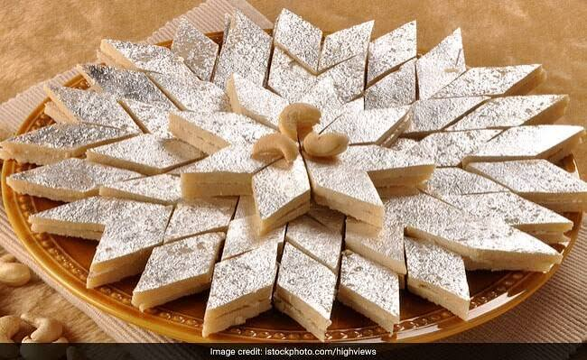
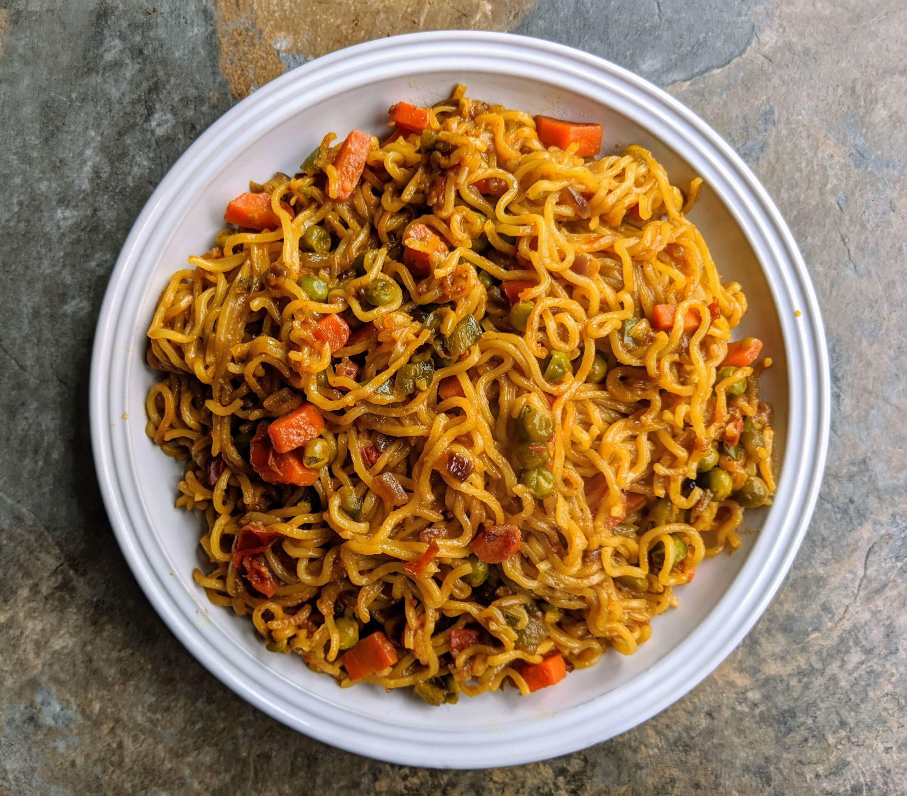

Gulab Jamun
Ingredients
- Cup milk powder
- ¼ cup all-purpose flour (maida)
- ¼ tsp baking soda
- 2 tbsp ghee
- ¼ cup milk (add gradually)
- Oil or ghee for frying
Recipe
- Make the syrup: Combine sugar, water, and cardamom in a saucepan. Bring to a boil, then simmer for 5–7 minutes. You want a light, sticky syrup—not a thick one-string syrup. Turn off the heat and add rose water and saffron.
- Prepare the dough: Mix milk powder, flour, and baking soda. Add the ghee, then gradually add milk until you have a very soft, smooth dough. Don't knead heavily. Let it rest for about 5–10 minutes.
- Shape: Divide into 12–15 portions and gently roll each into a smooth ball with no cracks. Cracks can cause the jamuns to split while frying.
- Fry slowly: Heat oil or ghee over low to medium-low heat. Fry the balls in batches, gently moving them around so they brown evenly. They should take roughly 6–8 minutes and become a deep golden brown. If they brown immediately, the oil is too hot.
- Soak: Let the fried jamuns cool for about 1–2 minutes, then place them in warm (not boiling) syrup. Soak for at least 1–2 hours so they become soft and juicy.

Barfi
Ingredients
- Milk powder – 2 cups
- Milk – ½ cup
- Sugar – ½ cup
- Ghee – 2 tbsp
- Cardamom powder – ½ tsp
- Chopped almonds/pistachios – 2 tbsp
- Saffron – a few strands (optional)
Recipe
- Prepare the mixture: Heat 1 tbsp ghee in a non-stick pan on low flame.
- Add milk and sugar and stir until the sugar dissolves.
- Gradually add milk powder, stirring continuously to prevent lumps.
- Cook on low flame for 5–7 minutes until the mixture becomes thick and starts leaving the sides of the pan.
- Add cardamom powder and remaining ghee. Mix well.
- Grease a plate/tray with a little ghee and transfer the mixture into it.
- Spread evenly and sprinkle chopped pistachios/almonds on top.
- Let it cool for 1–2 hours, then cut into squares or diamonds.

Maggi
Ingredients
- 1 packet Maggi noodles
- 1 Maggi Tastemaker
- 1¼ cups water
- Optional: 1 tsp butter, chopped onion, tomato, green chilli, peas, or coriander
Recipe
- Bring 1¼ cups water to a boil in a pan.
- Add the noodles and Tastemaker.
- Cook for about 2–3 minutes, stirring occasionally.
- For soupy Maggi, leave a little extra water; for drier Maggi, cook until most of the water evaporates.
- Add a little butter at the end for extra flavor and serve hot.
